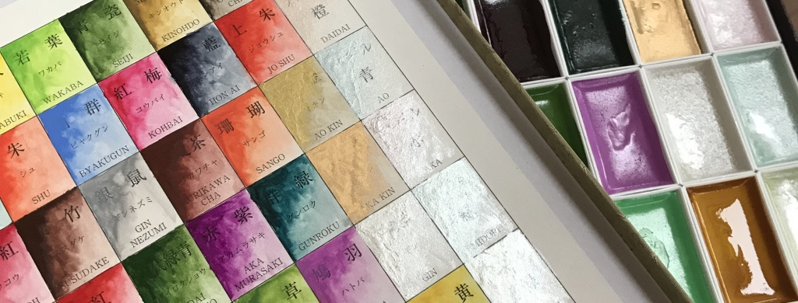
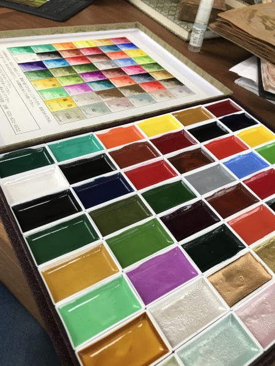
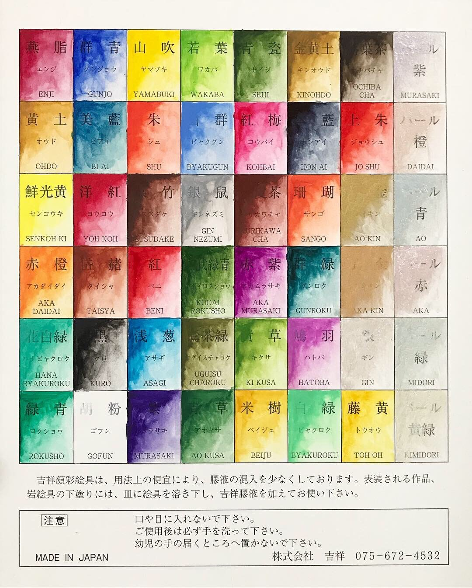
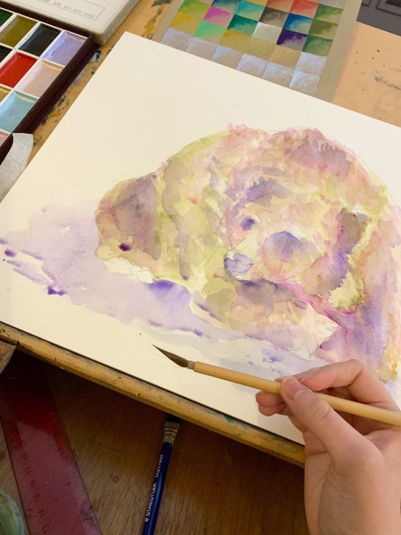

Note: this article contains affiliate links – buying anything using these links helps support me and my blog without any extra cost to you!
Despite both being deemed "watercolours", Chinese/Japanese watercolours are a completely different ball game to the standard Western watercolours you and I have grown to love, from their creation process to the appearance on paper.
Over the last couple of years, I have grown to love using Oriental gansai watercolours alongside my usual Western watercolours. Recently, I came across gansai by a brand called Kissho, which I have grown to love over the last couple of months.
 But what's the difference between Western and Eastern watercolours? What makes the Kissho Gansai so amazing? Read on to find out!Western vs Gansai Watercolours
The key differences start as the binding process: Western watercolours, such as those by Winsor & Newton or Daler Rowney, are usually bound with gum arabic, a natural gum consisting of hardened sap from the acacia tree. This is traditionally favoured as it dissolves easily in water and is absorbed into deeper layers of the paper when the paint dries.
Conversely, gansai traditionally uses animal glue as a binder, however most modern Japanese gansai brands favour glucose (or beeswax, glue, starch etc.) as suitable binding agent to achieve a glossier finish compared with Western watercolours. Gansai is a lot more vibrant due to this, as well as being more opaque and drying with a glossy finish rather than a matte one.
If you're looking for more information on the differences between gansai and Western watercolours, I highly recommend this blog post at sadiesavestheday.com – it's filled with some amazing detail and analysis on gansai/watercolour comparisons that I couldn’t even begin to go into!
Kissho Gansai: First Impressions
Before receiving the Kissho Gansi Watercolours as a gift, the only gansi I had ever tried was brand-leader Kuretake Gansai Tambi. These watercolours are amazing, don't get me wrong, but the Kissho paints take gansai to a whole new level.
I was so excited to try these watercolours and they did not disappoint! My set of 48 pans contained a variety of vibrant hues as well as pearlescent and metallic paints. Like other gansai, the paints are placed in large, shallow pans (as oriental brushes are usually quite large). I really love how Japanese palettes often contain bright purples and pastel hues that are so rarely seen in Western watercolour palettes.
I began by swatching the watercolours and I was immediately struck by how easily my brushes could pick up this gel-like pigment. With the Kuretake Gansi Tambi, I found it best to use a spray bottle to saturate the pans beforehand, in order to easily pick up the maximum amount of paint. However, as I further experimented with the Kissho Gansai, I ended up needing to use my spray bottle less and less, showing how easily these paints absorb water and lift onto the brush.
The most impressive gansai paints for me by far were the metallic paints (gold and bronze- see the 2nd from the right on the 3rd and 4th rows). I have tried various metallic paints, brush pens and even metallic inks in the past, yet none come close in quality to these two pans! As with all the other paint colours, the pigment easily collects on the brush with a bit of water, and is completely opaque on paper (as you can see on the above swatches). These bronze and gold paints make the perfect embellishment to any illustration.
Even on coloured paper, these watercolours are amazingly opaque. Often with Western watercolours, paints are famously transparent, while gansai is almost always perfectly opaque.
Experimenting with Gansai
I then began to work on some very *non-oriental-style* paintings, using these new found gansai paints. I wanted to see if it is possible to create Western-style art with Eastern paints, and I was not disappointed!
I really enjoyed working with these paints and it was also an eye-opening experience using oriental brushes for the first time. I began with a light wash and gradually built up layers of detail and more vibrant hues. Instead of mixing colours, I used bright purples, pinks and yellows straight from the palette, rather than trying to create a completely realistic painting and found the Chinese brushes absolutely perfect for adding to this watery effect.
I added details with the bronze gansai and found this really helped bring out the details and add an an extra shimmer.

Overall, I am spell-bounded by these beautiful gansai watercolours and would highly recommend them to any artists interested in trying Japanese watercolours. Kissho Gansai are like no other, with highly vibrant hues and top quality pigments.
If you're interested in purchasing the Kissho gansi, you can see the full 72-piece set here.
Want to try gansai, but not sure where to start? I highly recommend the Kuretake Gansai Tambi range, which you can find here. The brand is pretty readily available online and affordable for any artist curious about trying gansai for the first time.
I hope you have enjoyed this article and I have inspired you to try out Japanese watercolour painting. If you are interested in reading more blog articles about anything artsy, from stationery reviews to GCSE Art advice, please consider subscribing to this blog (just scroll to the bottom of the page and follow the instructions!).